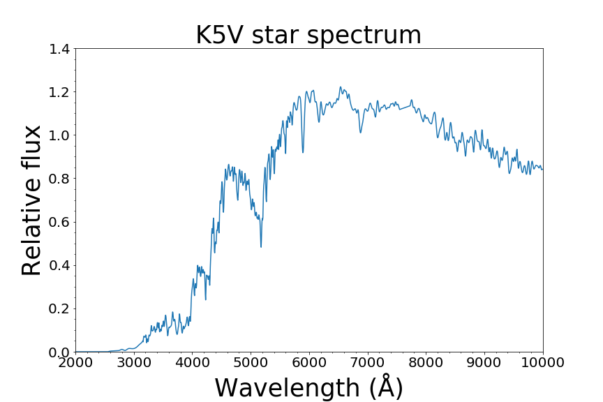

A K-type star is a star with an orange colour and a surface temperature between approximately 3,900 and 5,300 K, cooler than the Sun (a G-type star) but hotter than M-type red dwarfs. K-type stars occupy class K in the Harvard spectral classification sequence, which orders stars by decreasing surface temperature: O, B, A, F, G, K, M. Their spectra are dominated by neutral metallic absorption lines with extremely weak hydrogen lines. Main-sequence K stars — sometimes called 'orange dwarfs' or 'Goldilocks stars' — are considered among the most promising hosts for life-bearing exoplanets.

Vallastro / Wikimedia Commons (CC BY-SA 4.0)
{kind=link}
Spectral Features and Physical Properties
K-type spectra are distinguished by numerous neutral metal lines from iron (Fe I), manganese (Mn I), silicon (Si I), calcium, and sodium, together with cyanogen (CN) and hydroxyl (OH) molecular bands. In the late subtypes (K7–K9), faint bands of titanium oxide (TiO) begin to appear — the dominant feature in cooler M-type stars. Main-sequence K dwarfs (luminosity class V) have masses of 0.45–0.86 solar masses, radii of 0.70–0.96 solar radii, and luminosities of 0.08–0.60 solar luminosities. The colour index (B−V) ranges from approximately 0.82 to 1.40.
K-type stars are subdivided into ten subtypes from K0 (hottest, approximately 5,290 K) to K9 (coolest, approximately 3,930 K). Standard spectral anchors include Sigma Draconis (K0 V), Alpha Centauri B (K1 V), Epsilon Eridani (K2 V), and 61 Cygni A (K5 V).
K Dwarfs and K Giants
K-type stars exist across multiple luminosity classes and are visible to the naked eye as some of the brightest stars in the sky. Arcturus (α Boötis, K1.5 III) is the fourth-brightest star in the night sky at a distance of 36.7 light-years, with a radius approximately 25 times solar, a luminosity approximately 170 times solar, and a surface temperature of approximately 4,286 K. Aldebaran (α Tauri, K5 III) and Pollux (β Geminorum, K0 III) are other prominent K giants visible to the naked eye. K-type main-sequence dwarfs are, however, the most scientifically significant subclass for exoplanet habitability research.
Prevalence in the Galaxy
Approximately 12–13% of main-sequence stars in the solar neighbourhood are K-type, making K dwarfs roughly three to four times more abundant than G-type (Sun-like) stars. Roughly 1,000 K-type stars lie within 100 light-years of Earth.
The 'Goldilocks Stars' for Life
K dwarfs occupy a 'sweet spot' between the rarer, shorter-lived G stars and the more numerous but potentially hazardous M red dwarfs. Several properties make them particularly favourable for habitability. Their main-sequence lifetimes of 17–70 billion years are substantially longer than the Sun's approximately 10 billion years, providing far more time for biological evolution. Planets in K-dwarf habitable zones receive approximately 1/100th as much X-ray radiation as planets in the close-in habitable zones of active M-dwarf stars, and K dwarfs sustain less intense magnetic fields, driving fewer powerful stellar flares. Habitable-zone planets around K dwarfs orbit at distances typically sufficient to avoid tidal locking, unlike inner-orbit planets around M dwarfs. One important caveat is that K dwarfs emit dangerously high levels of X-ray and far-ultraviolet radiation for a considerable period early in their main-sequence phase, which may delay or inhibit the emergence of life on young planets.
Among well-known examples, Epsilon Eridani (K2 V, 10.5 light-years) hosts a confirmed exoplanet, while 61 Cygni A (K5 V, 11.4 light-years) was the first star other than the Sun to have its distance measured, by Friedrich Bessel in 1838. The positions of K dwarfs and K giants on the Hertzsprung-Russell diagram reflect their distinct evolutionary states.